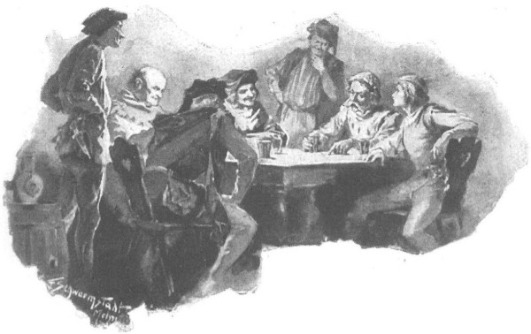

Tyniec
[2]
, trong tửu quán “Bò rừng
[3]
hung bạo” thuộc đan viện
[4]
, có mấy người đang ngồi nghe chuyện của một chiến binh từng trải, vừa từ những miền xa xôi trở về, kể lại chuyện phiêu lưu mà ông đã từng trải qua trong thời buổi chiến chinh cùng những cuộc lữ hành.
Người đàn ông râu ria rậm rạp, tuổi tráng niên, vóc dáng lực lưỡng đến gần như khổng lồ, nhưng lại gầy gò; tóc được bọc trong mao mạng, một túi lưới có đính những hạt cườm; mình khoác chiếc áo chẽn kubrak bằng da với những đường hằn lồi ra của bộ giáp phục, thắt ngoài chiếc đai lưng làm bằng những móc khóa đồng; dưới đai lưng giắt con dao đựng trong bao sừng, bên sườn là thanh đoản kiếm dùng khi đi đường.

Trong tửu quán, có mấy người đang ngồi nghe chuyện của một chiến binh từng trải
Ngồi cạnh ông bên bàn là một trang thanh niên với mái tóc dài và ánh mắt vui vẻ, hắn là bạn đồng hành hoặc tùy tùng của ông, bởi chàng cũng mặc hành trang, với chiếc áo chẽn bằng da hằn những đường nét của bộ giáp phục. Đám người còn lại là hai chủ đất trong vùng Kraków [5] và ba gã thị dân đội mũ xếp màu đỏ, những chiếc chỏm mũ nhỏ xíu rủ dài vắt vẻo sang bên sườn dài đến gần khuỷu tay.
Gã chủ quán người Đức, đầu đội chiếc mũ màu vàng xám, mặc áo có cổ hình răng cưa, vừa rót bia đậm đặc từ vò ra vại đất nung cho khách, vừa lắng nghe những chuyện phiêu lưu chiến chinh kỳ thú.
Đám thị dân còn lắng nghe chăm chú hơn. Thời ấy, lòng thù hận bắt nguồn từ đời Lokietkowy [6] đã từng chia rẽ cư dân thành thị với giới trang chủ hiệp sĩ cũng đã nguội đi đáng kể, và đám thị dân còn ngẩng đầu cao hơn trong những thế kỷ về sau. Việc họ sẵn sàng ad concessionem pecuniarum [7] vẫn còn được đánh giá cao, vì vậy không ít phen ta bắt gặp các thương gia chén chú chén anh với giới trang chủ quý tộc trong tửu quán. Họ được chào đón vui vẻ, bởi là những kẻ rủng rỉnh tiền tiêu, họ thường trả tiền chè chén thay cho đám người được mang gia huy.
Vậy nên lúc này đây, họ đang ngồi lắng nghe và tham gia vào câu chuyện, thi thoảng đánh mắt cho chủ quán để được rót đầy vại.
- Vậy, thưa hiệp sĩ khả kính, ngài đã từng chu du khắp thế gian đấy nhỉ? - Một thương gia lên tiếng.
- Không mấy người trong số những kẻ giờ đây từ khắp tứ phương đổ dồn về Kraków đã từng thấy được ngần ấy nơi. - Hiệp sĩ đáp.
- Cũng đông người kéo tới đây lắm. - Gã thị dân nói tiếp. - Cầu phúc lớn và những tháng năm vinh quang cho vương quốc [8] ta! Người ta còn đồn, mà chắc đúng thế, rằng đức vua đã ra lệnh phủ vải sợi vàng đính ngọc quý cho toàn bộ long sàng của hoàng hậu, và còn căng lọng che phía trên nữa kia. Sẽ có nhiều trò vui và những cuộc thi đấu mà mắt thế gian chưa từng được thấy.
- Bạn Gamroth này, chớ nên ngắt lời ngài hiệp sĩ như thế. - Thương nhân thứ hai lên tiếng.
- Tôi đâu có ngắt lời, bạn Eyertreter, có điều tôi nghĩ ngài đây cũng muốn biết người ta đang đồn đại thế nào, vì chắc chắn ngài sẽ đích thân đến thành Kraków. Dù sao thì hôm nay ta cũng không vào thành được nữa, cổng thành đã đóng rồi, mà đến đêm thì lũ bọ chó chẳng để ai được ngủ, nên ta còn có khối thì giờ mà đàm đạo.
- Nói một thì ông đáp những hai mươi! Ông già mất rồi, bạn Gamroth ạ!
- Thế mà một tay tôi vẫn quắp nổi nguyên cả súc dạ ướt đấy!
- Ối giời! Có mà là thứ dạ mỏng, thưa như mắt sàng, ánh sáng lọt qua ấy chứ gì!
Những lời đôi co bị người chiến binh đường xa ngắt ngang; ông nói:
- Chắc chắn tôi sẽ lưu lại Kraków chứ, cứ nghe đồn về những cuộc đua ngựa và thi đấu, máu tôi đang sôi lên sùng sục đây! Cả thằng cháu tôi đây nữa, dù còn trẻ và chưa có sợi râu nào, nhưng đã cho khối chiến binh đo đất rồi đấy!
Mọi người đưa mắt nhìn chàng trai đang mỉm cười vui vẻ, đưa tay vén mớ tóc dài giắt vào sau tai và nhấc vại bia đưa lên môi.
Người hiệp sĩ già nói tiếp:
- Mà nói cho cùng, có muốn quay về thì chúng tôi cũng chẳng biết về đâu nữa.
- Sao lại thế? - Một vị quý tộc hỏi. - Các vị đến từ đâu và danh tính là gì?
- Tôi là Maćko [9] trang Bogdaniec, còn thằng bé đang tuổi lớn đây, con trai anh ruột tôi, tên là Zbyszko [10] . Gia huy của chúng tôi là Móng Ngựa Cùn, chiến lệnh là Mưa đá!
- Trang Bogdaniec của ông nằm ở đâu vậy?
- Ha! Người anh em ạ, tốt hơn là ông hãy hỏi nó đã từng ở đâu, bởi nó đâu còn nữa! Hey! Trang Bogdaniec của chúng tôi đã bị thiêu hủy ra tro ngay từ hồi chiến tranh giữa Grzymalit với Nalecz [11] , chỉ còn lại độc một ngôi nhà duy nhất, của nả có gì bị chúng vét mang đi sạch, gia nhân chạy trốn hết. Chỉ còn lại mảnh đất trần trụi trống trơn, đám dân quê ở vùng lân cận cũng trốn tiệt vào rừng. Cùng với ông anh trai, cha đẻ thằng cháu đây, chúng tôi đã xây dựng lại, nhưng đến năm sau thì nước lũ lại cuốn đi tất thảy. Rồi ông anh tôi chết, để lại mình tôi với thằng cháu mồ côi. Hồi ấy tôi đã nghĩ bụng: Ta sẽ không chịu ngồi yên! Mà hồi đó người ta đồn đại về cuộc chiến [12] và về ngài Jaśko xứ Oleśnica, người được đức vua Władysław phái đến thành Wilno thay cho ngài Mikołaj xứ Moskorzew, đang tìm kiếm các hiệp sĩ giúp sức khắp Ba Lan. Vậy là, tìm được cha tu viện trưởng khả kính, cha Janek [13] xứ Tulcza, cũng là họ hàng của chúng tôi, tôi bèn giao hết điền sản lại cho cha, kiếm tiền sắm sanh khí giới và ngựa nghẽo chuẩn bị lên đường chinh chiến. Còn thằng bé cháu, khi ấy mới mười hai tuổi, tôi đặt lên yên con ngựa non, thế rồi, hey, lên đường đến với ngài Jaśko xứ Oleśnica!
- Mang cả thằng bé đi theo sao?
- Hồi ấy nó còn bé hơn kia, nhưng đã cứng cáp ngay từ nhỏ. Hồi mới mười hai tuổi, nó đã tì cánh nỏ [14] xuống đất, lấy bụng đè chặt xuống, rồi quay tay vặn để giương nỏ, và không một tay người Anh nào từng gặp ở thành Wilno có thể giương cung nỏ khỏe hơn nó!
- Nó khỏe thế sao?
- Nó mang được mũ trụ cho tôi, và đến năm lên mười ba thì mang thêm cả khiên nữa.
- Mà chuyện chiến chinh thì nơi đó hẳn ngài không thiếu.
- Vì đại quận công Witold [15] đấy. Đại quận công với quân Thánh chiến cứ hằng năm lại thúc quân tràn sang Litva để tấn công Wilno. Cùng đi với chúng có khối người nước ngoài: người Đức, người Pháp, người Anh là những tay cung nỏ thiện nghệ nhất, người Séc, người Thụy Sĩ, người Burgundia [16] . Bọn chúng chặt hết rừng, chiếm trọn các thành trì dọc đường đi, rồi rốt cuộc tấn công thành Wilno bằng lửa và gươm, tàn khốc đến nỗi toàn bộ dân chúng sinh sống ở vùng ấy đành phải bỏ đi tìm miền đất khác, dù ở nơi tận cùng thế giới, dù là phải sống chung với con cháu của Quỷ vương Belial [17] , cốt sao cách xa bọn Đức.
- Ngay ở đây cũng nghe đồn rằng dân Litva muốn mang tất tần tật vợ con cuốn gói khỏi đất ấy, nhưng chúng tôi chưa tin.
- Tôi thì thấy tận mắt rồi. Hey! Không có ngài Mikołaj xứ Moskorzew, không có ngài Jaśko xứ Oleśnica, và không phải tự khen đâu, nếu không có chúng tôi, thì chắc chẳng còn thành Wilno nữa đâu!
- Chúng tôi biết chứ. Các ngài không chịu nộp thành!
- Nộp sao được! Này, chú ý điều tôi sắp nói đây, vì chưng tôi là người dày công trạng, lại đã chứng kiến chiến tranh. Người có tuổi thường có câu cửa miệng: “Khó mà va Litva” - và quả đúng thế! Họ đấu tay đôi thì giỏi, nhưng dàn trận đấu với giới hiệp sĩ trên chiến trường thì xoàng. Nếu ngựa kéo bọn Đức sa vào bãi lầy hay vào rừng rậm thì lại là chuyện khác.
- Người Đức là những hiệp sĩ giỏi! - Đám thị dân thốt lên.
- Chúng mặc giáp phục kín mít, đứng xếp hàng san sát liền nhau như tường thành, cố lắm mới thấy mắt chúng sau những miếng sắt che mặt. Chúng luôn di chuyển theo đội hình. Thường mỗi khi chúng tấn công, Litva vụn ra như cát, còn nếu không tan thì chúng cũng cho lên thớt mà dần mà chặt cho tàn diệt mới thôi. Cũng không phải chỉ toàn người Đức đâu, trên thế giới có chủng người nào thì đều tham gia quân Thánh chiến cả. Mà can trường lắm! Nhiều phen bọn hiệp sĩ cúi mình, chĩa mũi đòng [18] ra trước mặt, cả một đội quân muôn người như một, trông hệt như đàn kền kền vậy.
- Chúa ơi! - Lão Gamroth kêu lên. - Trong bọn người nước ngoài thì quân nào giỏi nhất?
- Còn tùy vào vũ khí. Cung nỏ thì người Anh thiện xạ nhất, họ bắn tên xuyên qua cả giáp sắt, cách trăm bước bách phát bách trúng. Người Séc thì vung rìu chặt rất kinh. Sử kiếm song thủ [19] không ai giỏi bằng lính Đức. Người Thụy Sĩ thì giỏi dùng chùy sắt choảng vào mũ sắt. Nhưng những hiệp sĩ vĩ đại nhất là những người xuất thân từ đất Pháp. Loại hiệp sĩ đó đánh bại anh trên ngựa cũng như trên bộ, lại còn biết thét lên những lời dũng mãnh kinh hoàng mà anh chẳng hiểu tí nào, bởi thứ tiếng nói đó nghe hệt như tiếng bát đĩa bằng thiếc [20] va nhau xủng xoẻng, dù họ toàn là dân mộ đạo cả. Qua bọn Đức, chúng gọi ta là dân ngoại đạo và dân Saracen [21] vì ta chống lại Giáo đoàn, và buộc phải đấu hiệp sĩ tay đôi để chứng minh điều đó. Còn có cả tòa phán xử của Chúa [22] giữa bốn người bọn chúng và bốn hiệp sĩ của chúng ta, trường đấu đã định tại cung điện của Waclaw - hoàng đế Thánh chế La Mã [23] và vua Séc. [24]
Đến đây, đám thị dân và thương nhân càng thích thú hơn, vươn dài cổ về phía ông Maćko trang Bogdaniec, đồng thanh hỏi:
- Bên ta là những ai vậy? Ngài nói đi!
Ông Maćko nâng vại bia lên môi, uống một hơi rồi mới đáp:
- Ầy, đừng lo! Có ngài Jan xứ Wloszczowa, viên trấn thành [25] Dobrzyń, có ngài Mikołaj xứ Waszmuntow, ngài Jaśko xứ Zdakow và ngài Jarosz xứ Czechów. Toàn là dân hiệp sĩ sáng danh, tầm vóc tuyệt vời cả. Với họ, đấu bằng đòng, bằng gươm hay bằng rìu - chấp tuốt. Mắt được thấy, tai được nghe nhiều điều kỳ thú, bởi như tôi đã nói, dù bị đầu gối chẹt cổ, bọn Pháp vẫn chưa thôi thốt ra những lời lẽ hiệp sĩ. Cầu Chúa lòng lành và thánh giá thiêng liêng trợ giúp cho bọn kia được nói và người của ta được đánh!
- Sẽ được vinh danh [26] , chỉ cầu Chúa ban phước! - Một vị quý tộc thốt lên.
- Cầu Thánh Stanislaw [27] ! - Vị quý tộc kia lên tiếng.
Rồi quay sang ông Maćko, người đó lại hỏi tiếp:
- Này, ngài hãy nói xem! Ngài ca ngợi bọn Đức và những hiệp sĩ khác là dũng mãnh, dễ dàng chinh phục Litva. Còn với chúng ta thì chúng không vất vả hơn sao? Chúng hăng đánh ta lắm sao? Chúa đã phán xử ra sao? Ngài phải vinh danh người của chúng ta nữa chứ!
Nhưng ông Maćko trang Bogdaniec tỏ ra không phải là kẻ hay khoe khoang, mà chỉ khiêm tốn đáp:
- Chỉ có kẻ nào ngu ngơ từ phương xa đến mới dám hăng hái tiến đánh chúng ta, nhưng thử một lần, rồi hai lần thì không còn lòng dạ đâu mà đánh nữa. Dân ta rắn lắm, vì tính ấy mà người ta thường nói: “Các người coi thường cái chết, đúng thế, nhưng các người giúp đỡ dân Saracen, vì thế các người sẽ bị nguyền rủa!” Nhưng nói vậy là không đúng, vì thế ta lại càng gan góc cóc tía hơn. Cả vương quốc lẫn Litva đều đã chịu rửa tội, ai cũng theo Chúa Ki-tô, dù không phải ai cũng biết theo cho đúng cách. Người ta đều biết đức vua ta đầy nhân từ, ngay cả khi con quỷ trong nhà thờ xứ Plock bị ném xuống đất, người vẫn ra lệnh thắp cho nó mẩu tàn nến, đến nỗi cha xứ phải thưa với người rằng không nên làm thế, người mới thôi. Mà con người ấy mới giản dị làm sao! Nhiều người bụng bảo dạ: “Đức vua đã khuyến các quận công cải đạo thì mình cũng cải đạo, bảo dập trán thờ Chúa Ki-tô thì mình cũng dập trán cúi đầu, nhưng sao mình lại phải tiếc mấy mẩu nến tàn với lũ quỷ sứ ngoại đạo, không thí cho chúng mớ củ cải nướng, hay không hớt cho chúng chút bọt bia? Nếu mình không làm thế thì ngựa sẽ bị khuỵu gối, bò bê bị bệnh lở loét, hay sữa sẽ biến thành huyết, mà mùa màng lại thất bát không chừng!” Và nhiều người cứ làm như vậy, vì thế mà bị nghi ngờ. Nhưng họ làm thế chỉ vì họ không hiểu biết và vì e sợ lũ quỷ sứ mà thôi. Mà lũ quỷ thì ngày xưa sống phong lưu lắm. Chúng có những khu rừng thưa, có những căn lều lớn, có cả ngựa để cưỡi và có thuế thập phân [28] để thu. Bây giờ thì rừng hoang đã bị chặt thưa, không có chút gì để ăn, vì người ta thỉnh chuông khắp chốn phố phường, vậy là đồ bẩn thỉu tanh hôi đành chúi vào những khoảnh rừng dày nhất mà hú hét lên vì nhung nhớ. Dân Litva có đi vào rừng dày rừng thưa, thì sẽ bị một rồi hai con quỷ túm lấy áo lông thú mà mè nheo kèo nhèo: “Cho xin với!” Một số người cho, nhưng cũng có nhiều người khác can trường hơn thì không cho gì cả mà còn tóm lấy chúng. Một người đổ đậu rang vào túi bong bóng bò, thế là cả mười ba con quỷ mò vào ngay. Ông ta nút miệng túi bằng cọc thanh lương trà kỵ ma, rồi mang đến thành Wilno bán cho các cha xứ người Pháp, họ vui lòng trả cho ông ấy những hai mươi skojec [29] vì đã diệt được kẻ thù của Chúa Ki-tô. Chính mắt tôi đã trông thấy cái bong bóng đó, ngay từ xa nó đã tỏa mùi hôi thối lộn mửa, như chọc vào mũi người ta, bởi các thứ linh hồn bẩn thỉu ấy hoảng sợ trước nước thánh mà tỏa mùi ra…
- Thế ai đếm mà biết là có mười ba con quỷ? - Thương nhân Gamroth tọc mạch hỏi.
- Chính ông lão người Litva ấy đếm từng con khi chúng mò vào chứ ai nữa. Rõ ràng là chúng nó có bên trong, từ thứ mùi hôi hám tỏa ra là đủ biết, bởi chẳng ai muốn chạm vào cọc nút túi.
- Lạ thật, lạ thật đấy! - Một nhà quý tộc thốt lên.
- Tôi cũng đã thấy khối chuyện lạ ở đó. Dân tộc ấy tốt thì tốt thật, nhưng ở chỗ họ mọi thứ đều lạ kỳ. Người họ râu tóc rậm rì, chỉ có bậc vương giả thì mới chải chuốt một tí; họ ăn nhiều củ cải đỏ nướng, món đồ ăn nào cũng cho củ cải vào, bởi họ bảo món ấy nuôi dưỡng chí can trường nam nhi. Họ sống trong lều cùng với của cải kiếm được và rắn rết [30] , ăn uống thì thùng bất chi thình, không biết thế nào là vừa. Đàn bà đã có chồng thì họ không coi ra gì, nhưng gái đồng trinh thì coi trọng lắm, vì họ cho là có sức mạnh ghê gớm. Chỉ cần một cô thiếu nữ dâng hiến quả dâu khô là người các chàng đã nổi gai ốc cả lên rồi.
- Nổi gai ốc cũng chẳng sao, miễn là các cô nàng tuyệt vời! - Ông Eyertreter kêu lên.
- Chuyện đó thì hỏi thằng Zbyszko đây. - Ông Maćko trang Bogdaniec bảo.
Còn Zbyszko thì cả cười, khiến chiếc ghế chàng đang ngồi rung lên bần bật:
- Họ tuyệt lắm! - Chàng nói. - Nàng Ryngalla chẳng tuyệt vời sao?
- Nàng Ryngalla nào? Gái lầu phong nguyệt hay sao? Hả?
- Sao vậy? Các ông chưa nghe nói về nàng Ryngalla sao? - Ông Maćko hỏi.
- Chúng tôi chẳng hề nghe gì cả.
- Thì đó chính là em gái đại quận công Witold, phu nhân của quận công Henryk vùng Mazowsze đấy thôi.
- Ông nói gì thế! Quận công Henryk nào? Chỉ có một quận công mang tên đó, là đức giám mục tân cử [31] xứ Plock, nhưng ông ấy đã mất rồi còn đâu!
- Chính ngài ấy đấy. Lẽ ra từ Roma, người ta sẽ gửi giấy hôn thú đến cho ngài, nhưng thần chết đã nhanh chân hơn, có lẽ vì hành động của ngài đã không làm Chúa hài lòng. Hồi ấy, khi tôi được phái mang tín thư của tướng công Jaśko xứ Oleśnica đến cho quận công Witold, thì quận công Henryk, đức giám mục tân cử xứ Plock, cũng được đức vua phái đến Ryterswerder. Dạo đó, chiến cuộc đã khiến quận công Witold nản chí, bởi ông không sao chiếm nổi thành Wilno, còn đức vua thì đã quá buồn phiền vì mấy người anh em ruột cùng thói xa xỉ vô độ của họ. Thấy quận công Witold nhanh nhẹn và hiểu biết hơn, đức vua bèn phái đức giám mục tân cử đến gặp, khuyên ông rời bỏ quân Thánh chiến, rồi ngài sẽ phong ông làm đại quận công cai trị Litva. Vốn thích đổi thay, Witold liền ân cần tiếp đãi tín sứ. Bao tiệc tùng và trò tỷ thí được tổ chức. Ngài giám mục tân cử ta lấy làm vui sướng được cưỡi ngựa, dầu các đức cha chẳng mấy ưa việc đó. Ngài còn muốn chứng tỏ tài hiệp sĩ trên đấu trường. Các quận công Mazowsze thảy đều tuấn kiệt, các nữ nhân đồng họ ấy có thể bẻ gãy móng sắt ngựa như không. Có lần quận công đốn ngã cả ba hiệp sĩ khỏi yên ngựa, lần khác thì những năm người, kể cả tôi, còn ngựa của thằng cháu Zbyszko đây thì bị quỵ chân khi xáp chiến với ngài. Ngài giành tất cả các giải thưởng từ tay quận chúa Ryngaila tuyệt thế giai nhân. Rồi trên mình vẫn mang đầy đủ giáp phục, ngài quỳ xuống chân nàng. Hai người si mê nhau đến độ trong bữa tiệc, các tu sĩ tháp tùng đã phải lôi ngài ra, còn quận chúa thì bị anh trai là quận công Witold kiềm chế. Quận công Henryk liền hét lên: “Ta sẽ tự cấp phép cho ta, nếu Giáo hoàng Roma không chuẩn y thì đã có Giáo hoàng Avignon [32] . Ta phải cưới nàng ngay lập tức, nếu không ta sẽ bị lửa tình thiêu thành tro bụi!” Đó quả là một sự nhục mạ ghê gớm đối với Chúa, song quận công Witold không muốn cưỡng lại, để khỏi làm mếch lòng vị đặc sứ của đức vua, và thế là đám cưới được cử hành. Sau đó, cô dâu chú rể lên đường đi Suraz, rồi về Slusk, trước sự đau xót vô chừng của thằng cháu Zbyszko đây, kẻ mà theo phong tục Đức đã chọn quận chúa Ryngalla làm nữ chúa trái tim và đã thề nguyện trung thành với nàng đến trọn đời…
- Chú thôi đi nào! - Zbyszko đột ngột ngắt lời. - Ư, đúng thế đấy! Nhưng sau đó, người ta đồn quận chúa Ryngalla đã tự tay đầu độc chồng, khi hiểu rằng nàng không được lấy một cha giám mục tân cử, vì mặc dù có vợ nhưng quận công không muốn từ bỏ chức sắc chăn chiên của mình, và mối duyên cầm sắt kia không thể được hưởng phước lành của Chúa. Nghe tin ấy, cháu đã nhờ một vị ẩn sĩ thánh thiện ở gần Lublin giải khỏi lời thề nguyện ấy rồi còn gì.
- Ẩn sĩ thì lão ta đúng là ẩn sĩ, - ông Maćko cười, - còn có thánh thiện hay không thì ta không rõ, bởi lẽ chúng ta gặp lão trong rừng vào đúng hôm thứ Sáu, lúc lão đang dùng rìu dần xương gấu để hút tủy, lão hút mạnh đến nỗi cổ họng phát kêu rồ rồ kia.
- Nhưng ông ấy bảo tủy đâu phải là thịt, hơn nữa ông ấy đã được bề trên cho đặc cách được ăn tủy như thế, vì sau khi uống tủy ông ấy mới có được những giấc mộng tuyệt vời thông tuệ, để hôm sau có thể tiên tri sự đời đến tận trưa.
- Nào! Nào! - Ông Maćko nói. - Gái góa Ryngalla tuyệt thế giai nhân vẫn đang sống và có thể sẽ gọi mày theo hầu đấy!
- Nếu vậy thì nàng ta sẽ uổng công chờ đợi thôi, cháu sẽ chọn một nữ chúa khác để phụng sự cho đến tàn hơi. Vả lại, trước sau cháu cũng sẽ tìm được vợ thôi.
- Trước hết, mày hãy tìm được đai hiệp sĩ đã. [33]
- Ồ! Chẳng phải sẽ có những cuộc đua tài mừng hoàng hậu lâm bồn ư? Trước hoặc sau dịp trọng đại ấy, thể nào đức vua chẳng phong tước hiệp sĩ cho nhiều người. Cháu sẽ địch nổi tất! Lẽ ra quận công đã chẳng thể quật ngã được cháu, nếu con chiến mã không tự nhiên bị khuỵu chân.
- Nơi đây khối người còn tài giỏi hơn mày.
Nghe vậy, các trang chủ vùng Kraków thốt lên:
- Lạy Chúa lòng lành! Ở chốn này, ra mắt hoàng hậu sẽ không phải những kẻ non như cậu đâu, mà là những hiệp sĩ lừng lẫy nhất thế gian kia. Tham gia hội võ sẽ có ngài hiệp sĩ Zawisza xứ Garbów [34] , hiệp sĩ Farurej và hiệp sĩ Dobko xứ Oleśnica, hiệp sĩ Powała xứ Taczew [35] , hiệp sĩ Paszko Đạo Chích xứ Biskupice [36] , hiệp sĩ Jaśko Naszan, hiệp sĩ Abdank xứ Góra, hiệp sĩ Andrzej xứ Brochocice, hiệp sĩ Krystyn xứ Ostrów [37] , lại còn hiệp sĩ Jakub xứ Kobylany nữa [38] … Cậu làm sao địch nổi họ. Cả tại đây, cả ở triều đình Séc, lẫn ở triều đình Hung, chẳng ai có thể đương đầu nổi với họ. Thứ cậu thì làm gì được? Cậu đòi giỏi hơn họ sao? Cậu bao nhiêu tuổi?
- Tôi mười tám rồi! - Zbyszko đáp.
- Vậy thì ai cũng có thể bóp cậu bẹp rúm bằng hai ngón tay.
- Để rồi xem!
Nhưng ông Maćko đã lên tiếng:
- Tôi nghe đức vua ban thưởng rất hào phóng cho các hiệp sĩ trở về từ cuộc chiến Litva. Là người bản địa, xin các ngài nói xem có đúng thế chăng?
- Ơn Chúa, đúng vậy! - Một vị trang chủ quý tộc đáp. - Lòng hào hiệp của quốc vương ta lừng lẫy nhân gian, nhưng len được tới chỗ người chẳng phải là chuyện dễ, bởi hiện giờ thành Kraków đầy nghẹt khách khứa tứ xứ tụ tập về đấy mừng hoàng hậu lâm bồn và dự lễ đặt tên, qua đó bày tỏ lòng kính trọng và ngưỡng mộ chúa công ta. Sẽ có mặt vua nước Hung [39] , và cứ như người ta đồn đại, sẽ có mặt cả hoàng đế Thánh chế La Mã [40] cùng bao vị quận công và bá tước khác nữa. Còn hiệp sĩ thì nhiều như trấu, bởi chẳng ai muốn tay trắng ra về.
Người ta còn đồn rằng đích thân Giáo hoàng Bonifacy [41] người đang rất cần sự ưu ái và trợ giúp của chúa công ta để chống lại những kẻ thù ở Avignon - cũng sẽ đến dự. Khó lòng chen chân vào trong đám người đông như nêm cối ấy, chứ còn như việc được ôm chân chúa công thì quả là đặc ân chỉ dành cho kẻ nhiều công tích mà thôi.
- Nếu vậy, tôi cũng sẽ được cho vào ôm chân đức vua, bởi tôi đã từng phụng sự người, và nếu có chiến tranh thì tôi sẽ lại xuất chinh lần nữa. Nơi chiến trận cũng kiếm được vài món chiến lợi phẩm, lại thêm được đại quận công Witold ân thưởng cho. Tôi cũng chẳng nghèo khó gì, có điều những tháng năm mãn chiều xế bóng sắp sình sịch đến rồi, mà ở tuổi già, khi sức lực rời bỏ xương cốt ra đi, con người ta chợt thấy cần một cái xó yên tĩnh.
- Đức vua rất muốn được gặp những người trở về từ Litva dưới sự thống lĩnh của tướng công Jaśko xứ Oleśnica. Tất thảy bọn họ hiện giờ đều được nuôi ăn béo đẫy.
- Các ngài thấy chưa! Mà tôi thì hồi ấy vẫn chưa trở về ngay đâu nhé, còn đánh nhau cho đến tận bây giờ. Các ngài nên biết rằng tình hòa hiếu giữa đức vua ta với đại quận công Witold khiến bọn Đức căm lắm [42] . Đại quận công đã khôn khéo thu lại con tin, rồi sau đó - hấp! Xông tới nện bọn Đức tơi bời! Ngài đã phá tan, đã thiêu sạch bao thành quách, giết chết bao hiệp sĩ, chặt đầu khối dân thường. Cả bọn Đức lẫn gã Swidrygiello [43] đã chạy trốn theo bọn chúng đều muốn báo thù. Thế là một cuộc đại chiến nữa lại nổ ra. Đích thân đại thống lĩnh Konrad [44] cùng bao hiệp sĩ khác tham gia trận đó. Chúng vây thành Wilno, cố sức dùng những cỗ xe công thành khủng khiếp để phá thành. Chúng đã bao phen tìm cách bí mật đột nhập vào thành, nhưng chẳng nên cơm cháo gì, mà đến khi rút lui, bao quân tướng của bọn chúng phải ngã gục, chẳng còn lấy phân nửa trở về. Chúng tôi còn ra chiến trường đánh nhau với gã Ulryk von Jungingen, em trai của viên đại thống lĩnh, lãnh binh [45] Sambia [46] nữa. Tên lãnh binh sợ đại quận công quá, vừa khóc vừa trốn chạy. Từ bấy đến giờ mới được yên, người ta xây dựng lại thành phố. Một vị chân tu hiển thánh có thể đi chân không trên sắt nung đỏ rực đã tiên báo rằng: từ nay trở đi, cho đến ngày tận thế, thành Wilno sẽ không phải thấy bóng một tên Đức nào mặc giáp phục xuất hiện trước cổng thành nữa. Nếu đúng vậy, thử hỏi tay ai đã góp phần làm nên công đó?
Nói đoạn, ông Maćko trang Bogdaniec chìa ra trước mặt đôi bàn tay rộng bản và thô tháp của mình. Mọi người thi nhau gật gù thừa nhận:
- Phải! Phải! Ngài nói phải! Đúng thế!
Nhưng câu chuyện bị ngắt quãng ở đó vì tiếng huyên náo từ ngoài chợt ùa vào qua các khung cửa sổ mà màng che bằng bong bóng [47] đã bị gỡ ra, bởi đêm ấy là một đêm ấm áp và đẹp trời. Từ phía xa vẳng lại tiếng nhạc xủng xoẻng, những giọng nói, tiếng ngựa hí giòn tan hòa lẫn với tiếng hát hò. Mọi người có mặt thảy đều ngạc nhiên, bởi lúc ấy đêm đã khuya, vầng trăng đã lên rất cao trên vòm trời. Lão chủ quán người Đức chạy vội ra sân, và trước khi các vị khách kịp dốc cạn những vại bia, lão đã chạy trở vào, còn vội vã hơn, kêu lên:
- Có đoàn xa giá cung đình nào đến đấy!
Lát sau, trong khung cửa xuất hiện một thị đồng mặc áo kubrãk màu xanh thắm, đầu đội chiếc mũ xếp nếp. Anh ta đứng đó, đưa mắt nhìn khắp những người có mặt, và khi trông thấy lão chủ quán, liền bảo:
- Ông hãy mau dọn sạch chiếc bàn kia và thắp thêm đèn nến lên, quận chúa Anna Danuta [48] sẽ dừng chân nghỉ ở đây đấy!
Nói đoạn, anh ta quay ra. Quán bắt đầu náo động. Chủ quán hối hả gọi đầy tớ, còn các vị khách thì đưa mắt nhìn nhau.
- Quận chúa Anna Danuta, - một thị dân lên tiếng, - đó chính là con gái cựu đại quận công Kiejstut, phu nhân của quận công Janusz xứ Mazowsze [49] . Đã hai tuần nay quận chúa có mặt tại thành Kraków, nhưng vừa rồi lại đến Zator viếng thăm quận công Waslaw, hôm nay chắc bà trở về.
- Ông Gamroth này, - người thị dân thứ hai bảo, - ta nên lánh vào kho chứa cỏ khô thôi, các vị khách này quá cao sang so với cánh ta đấy.
- Tôi chẳng lạ chuyện họ đi đêm, - ông Maćko lên tiếng, - vì ban ngày quá nóng. Nhưng tại sao đan viện ở ngay bên cạnh mà họ lại phải rẽ vào tửu quán?
Nói đến đây, ông quay sang Zbyszko:
- Quận chúa là chị ruột quận chúa Ryngalla tuyệt sắc đấy, mày biết chưa?
Zbyszko đáp:
- Chắc phải có nhiều thiếu nữ vùng Mazowsze cùng đi với quận chúa lắm đấy,
hey!